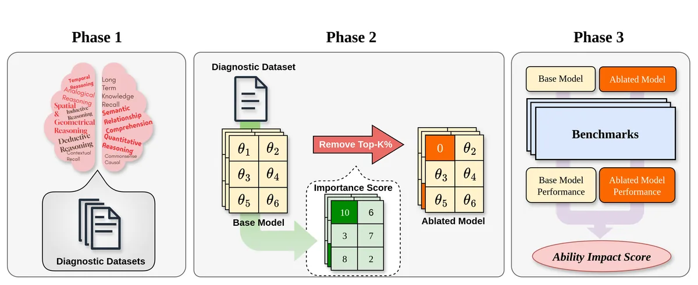

EMNLP 2025 · Main · Oral
Benchmark Profiling: Mechanistic Diagnosis of LLM Benchmarks

Abstract
Large Language Models are commonly judged by scores on benchmarks that often mask the mixture of abilities a task actually requires. We introduce Benchmark Profiling, a diagnostic framework that decomposes benchmark performance into ten cognitively grounded abilities. The method combines gradient-based importance scoring with targeted parameter ablation to compute an Ability Impact Score (AIS): how much each ability contributes to a model's performance on a given benchmark. Profiling three instruction-tuned models across ten widely used benchmarks yields four key findings: (i) most benchmarks draw on several abilities rather than one, (ii) datasets with similar labels rely on distinct ability mixtures, (iii) code-generation benchmarks reward broad multi-skill improvement and show only modest gains from narrow domain-specific fine-tuning, and (iv) abilities irrelevant to a task can negatively interfere with performance. The analysis explains why performance gains do not always translate into user-perceived competence, and supports benchmark auditing and interpretability.
At a Glance
- Background
- Benchmark scores are read as evidence of specific capabilities, yet a single number masks the mixture of abilities a task actually requires, and gains often fail to match user-perceived competence
- Problem
- Establish a framework that systematically diagnoses and quantifies which cognitive abilities each benchmark actually measures
- Method
-
- Define 10 cognitively grounded abilities with ability-specific diagnostic datasets
- Locate ability-relevant parameters via gradient-based importance
- Apply targeted MLP weight ablation and compare original vs. ablated performance to compute an Ability Impact Score (AIS)
- Profile three instruction-tuned models across ten widely used benchmarks
- Results
-
- Most benchmarks tap a mixture of abilities, not the single skill on their label
- Similarly labeled datasets rely on distinct ability mixes
- Code generation rewards broad multi-skill improvement; narrow fine-tuning yields modest gains
- Task-irrelevant abilities can interfere and hurt performance
- Role
-
- First author: led the methodology and overall study design
- Built the diagnostic datasets and the gradient-importance / ablation pipelines as reproducible tooling
- Automated large-scale experiment sweeps; designed and ran the human-expert evaluation
- Led analysis, writing, and the open-source release